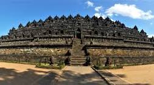
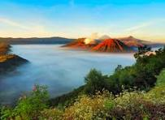
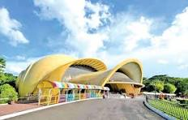

| No | Nama Objek Wisata | Lokasi | Deskripsi | Foto |
|---|---|---|---|---|
| 1 | Candi Borobudur | Magelang, Jawa Tengah | Candi Buddha terbesar di dunia |  |
| 2 | Pantai Kuta | Badung, Bali | Pantai yang terkenal dengan ombaknya | |
| 3 | Gunung Bromo | Probolinggo, Jawa Timur | Gunung berapi aktif dengan pemandangan sunrise yang indah |  |
| 4 | Taman Mini Indonesia Indah | Jakarta | Taman yang menampilkan kekayaan budaya dan alam Indonesia |  |
| 5 | Pulau Komodo | Manggarai Timur, Nusa Tenggara Timur | Pulau yang terkenal dengan komodo, hewan langka dan dilindungi | |
Objek wisata di Indonesia sangat beragam dan menarik untuk dikunjungi. Mulai dari keindahan alam, budaya, hingga sejarah, Indonesia memiliki banyak pilihan untuk Anda.